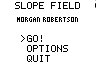

Slope Field v1.0
Programmed by Morgan Robertson
Controls
2nd -- Select menu option
Enter -- Select menu option, proceed to next screen
Alpha -- Return to title screen from options menu
Arrows -- Move cursor
Using Slope Field
Slope Field allows you to draw slope fields on the graph screen of your TI-83/84+. After you select "Go!" from the main menu, enter a derivative in terms of x and y when prompted to do so, then press Enter. After the slope field is drawn on the screen, press Enter and use the arrow keys to move a cursor around the screen. When you are finished viewing the slope field, press Enter again to return to the main menu. From the options menu, you can choose the number of slopes that will be drawn on the screen, adjust the window, and turn the axes on and off.

Credits
Programmed by Morgan Robertson
Special thanks to Mrs. Smirl for the inspiration and for being such a great calculus teacher
Contact Info
You can email me at robertson.md7@gmail.com if you have any questions or comments. You can also visit my website at http://robertson.heliohost.org to download programs for the TI-83/84+ and the Nintendo DS. Do you like my programs? Then why not make a donation? Your donations keep me motivated and will enable me to purchase hardware and software development tools so that I can continue to create useful and entertaining programs for the both the TI-83/84+ and the Nintendo DS. Click on the "Donate" link below to make a donation via credit card or your PayPal account. Thank you for your support!
License
Slope Field is free software and may be distributed freely via the internet. This program is distrubuted without a warranty; by downloading this file, you agree that I am not responsible for any damage that occurs to your computer, calculator, or any other property as a result of using this program.
Update/Release History
v1.0
Released at http://robertson.heliohost.org on 2/29/08 and at http://ticalc.org.